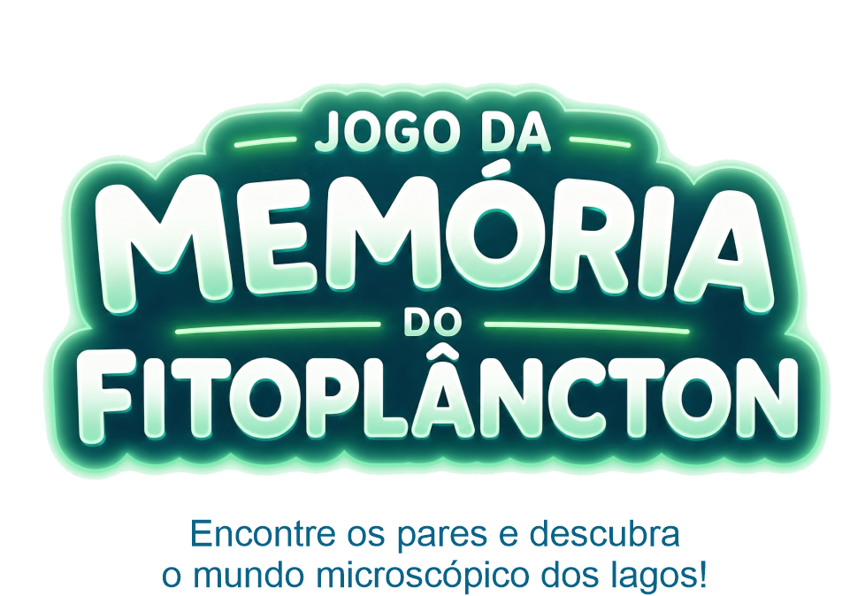

O LATEC (Laboratório de Taxonomia e Ecologia do Fitoplâncton) da UFG desenvolve pesquisas voltadas à comunidade fitoplanctônica.
Este jogo foi desenvolvido como parte de um projeto educacional com foco em recursos didáticos e aprendizagem ativa.
Desenvolvedor Web: @uesleb1
Revisor(a)s: @jascieli e @anny.gif
Colaboradores: @andre.acg, @laurabeatrizgm, @leandro_silvassp, @samela07, @talissonscotelano, @isadoraberocha.
© Todos os direitos reservados
O fitoplâncton é formado por microrganismos aquáticos capazes de realizar fotossíntese, sendo a base da cadeia alimentar dos ecossistemas marinhos e de água doce.
Eles são fundamentais para a produção de oxigênio do planeta e para o equilíbrio ambiental.
Existe uma grande diversidade de formas, tamanhos e estruturas em ambientes aquáticos.
Deseja continuar para a próxima fase?
Você completou todas as fases 💚